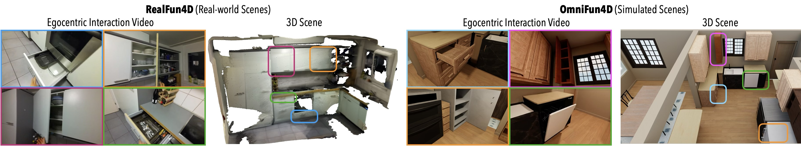

Abstract
We present FunREC, a method for reconstructing functional 3D digital twins of indoor scenes directly from egocentric RGB-D interaction videos. Unlike existing methods on articulated reconstruction, which rely on controlled setups, multi-state captures, or CAD priors, FunREC operates directly on in-the-wild human interaction sequences to recover interactable 3D scenes. It automatically discovers articulated parts, estimates their kinematic parameters, tracks their 3D motion, and reconstructs static and moving geometry in canonical space, yielding simulation-compatible meshes. Across new real and simulated benchmarks, FunREC surpasses prior work by a large margin, achieving up to +50 mIoU improvement in part segmentation, 5-10× lower articulation and pose errors, and significantly higher reconstruction accuracy. We further demonstrate applications on URDF/USD export for simulation, hand-guided affordance mapping and robot-scene interaction.
Video Results
Given an egocentric RGB-D interaction video, FunREC reconstructs a temporally grounded functional 3D digital twin of the environment, including static scene geometry and articulated parts along with their estimated kinematic parameters and per-timestep poses. The resulting digital twin can be directly used for downstream applications such as interactive manipulation and physical simulation.
Interactive Scene State Manipulation
The reconstructed digital twins are fully interactable: articulated parts can be manipulated by adjusting their joint parameters, allowing exploration of different scene configurations.
Physical Simulation in Isaac Sim
Using the reconstructed functional scene model, we export simulation-ready files (URDF/USD) that can be loaded directly into physics engines. Here, we show a real-world reconstructed scene imported into NVIDIA Isaac Sim, where we interact with its articulated parts by applying forces.
Datasets
We introduce two new egocentric 4D datasets with realistic, diverse interactions in real and simulated scenes.

RealFun4D
OmniFun4D
Robot-Scene Interaction
The functional scene model can be directly transferred to a mobile manipulator, enabling robot-scene interaction from human demonstrations. Given the inferred contact points, articulation parameters, and interaction trajectories, a Boston Dynamics Spot with Arm can reproduce the same interactions.
BibTeX
@inproceedings{delitzas2026funrec,
title={{Reconstructing Functional 3D Scenes from Egocentric Interaction Videos}},
author={Delitzas, Alexandros and Zhang, Chenyangguang and Gavryushin, Alexey and Di Mario, Tommaso and Sun, Boyang and Dabral, Rishabh and Guibas, Leonidas and Theobalt, Christian and Pollefeys, Marc and Engelmann, Francis and Barath, Daniel},
booktitle={IEEE/CVF Conference on Computer Vision and Pattern Recognition (CVPR)},
year={2026}
}